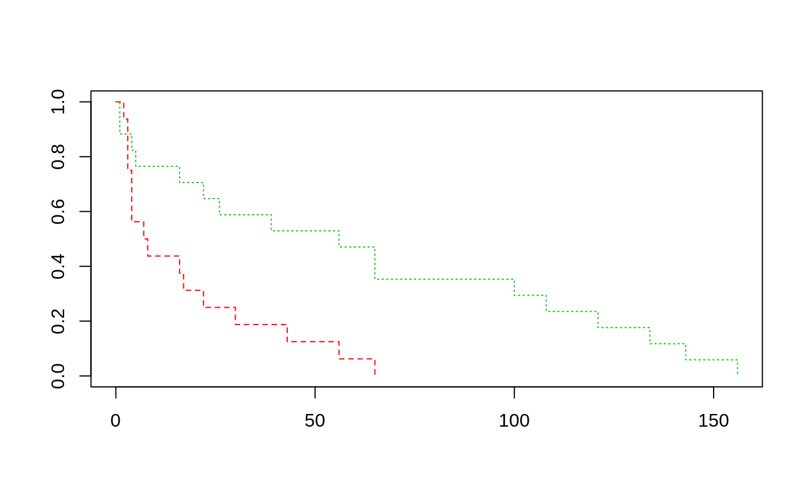

leuk.RdA data frame of data from 33 leukaemia patients.
leuk
A data frame with columns:
wbcwhite blood count.
aga test result, "present" or "absent".
timesurvival time in weeks.
Survival times are given for 33 patients who died from acute myelogenous leukaemia. Also measured was the patient's white blood cell count at the time of diagnosis. The patients were also factored into 2 groups according to the presence or absence of a morphologic characteristic of white blood cells. Patients termed AG positive were identified by the presence of Auer rods and/or significant granulation of the leukaemic cells in the bone marrow at the time of diagnosis.
Cox, D. R. and Oakes, D. (1984) Analysis of Survival Data. Chapman & Hall, p. 9.
Taken from
Feigl, P. & Zelen, M. (1965) Estimation of exponential survival probabilities with concomitant information. Biometrics 21, 826--838.
Venables, W. N. and Ripley, B. D. (2002) Modern Applied Statistics with S. Fourth edition. Springer.
#> Call: #> coxph(formula = Surv(time) ~ ag + log(wbc), data = leuk) #> #> n= 33, number of events= 33 #> #> coef exp(coef) se(coef) z Pr(>|z|) #> agpresent -1.0691 0.3433 0.4293 -2.490 0.01276 * #> log(wbc) 0.3677 1.4444 0.1360 2.703 0.00687 ** #> --- #> Signif. codes: 0 ‘***’ 0.001 ‘**’ 0.01 ‘*’ 0.05 ‘.’ 0.1 ‘ ’ 1 #> #> exp(coef) exp(-coef) lower .95 upper .95 #> agpresent 0.3433 2.9126 0.148 0.7964 #> log(wbc) 1.4444 0.6923 1.106 1.8857 #> #> Concordance= 0.726 (se = 0.047 ) #> Likelihood ratio test= 15.64 on 2 df, p=4e-04 #> Wald test = 15.06 on 2 df, p=5e-04 #> Score (logrank) test = 16.49 on 2 df, p=3e-04 #>